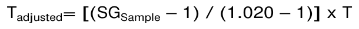
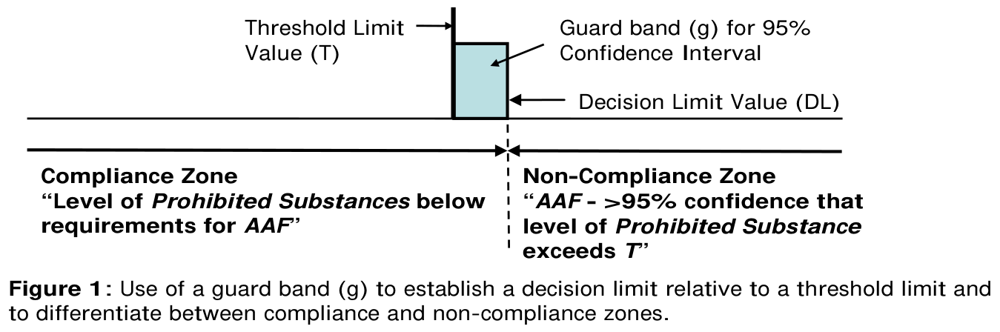
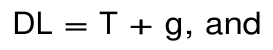
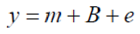
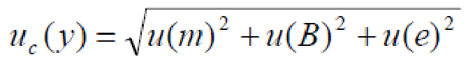
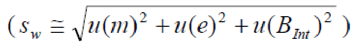
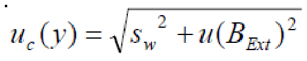
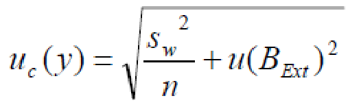
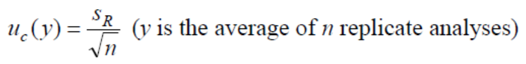
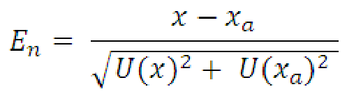

Technical Documents · TD2013DL
Edition v2.0, 2013 (version 2.0) · effective 11 May 2013 · superseded
Retrieved on 25 November 2026 from https://www.wada-ama.org/sites/default/files/resources/files/WADA-TD2013DL-Decision-Limits-for-the-Confirmatory-Quantification-Threshold-Substances-2.0-EN.pdf
Editions: v1.0, 2027 (current) · v1.0, 2022 · v1.0, 2021 · v2.0, 2019 · v1.0, 2019 · v1.0, 2018 · v2.0, 2017 · v1.0, 2017 · v1.0, 2014 · v2.0, 2013 · v1.0, 2012 · v1.0, 2010
p. 1
DECISION LIMITS FOR THE CONFIRMATORY QUANTIFICATION OF THRESHOLD SUBSTANCES
Introduction
This Technical Document shall be applied to the quantitative determination of a Threshold Substance in a Sample with particular regard to the decision limits (DL) that shall be applied to determine whether the result indicates an Adverse Analytical Finding (AAF). It also describes the use of measurement uncertainty (MU) information in the establishment of such DL.
A measurement of a Threshold Substance in a Sample shall be reported as an AAF when the level (expressed as a concentration or ratio of measured analytical values) exceeds, with an appropriate level of confidence (95%), the threshold level (T) for that Prohibited Substance (or ratio of substances) as defined by WADA.
This document provides requirements on the following issues:
-
Maximum levels of MU;
-
Setting DL for Threshold Substances;
-
Reporting.
Further guidance is provided in Appendix 1, including:
- Estimating MU;
- Method Development and Validation;
- Verification of MU by a Laboratory.
1 Maximum Levels of Measurement Uncertainty
The maximum acceptable combined standard uncertainty values (uc Max) for each Threshold Substance represents the minimum requirement to be achieved by a Laboratory for the uncertainty of measurement, estimated at levels close to the threshold concentration (units/mL), when reporting a result for the determination of a Threshold Substance. The uc Max values are set such that a Laboratory can reasonably expect to work within them when applying a procedure for the determination of Threshold Substances on a routine basis.
In most cases, uc Max is assigned using data from the combined participant results obtained from relevant rounds of the External Quality Assessment Scheme (EQAS). In cases where a new Threshold Substance is introduced to the Prohibited List before EQAS performance data are available, alternative approaches can be used to assign the relevant uc Max, In this case the assignment of uc Max must be reviewed and approved by the WADA Laboratory Expert Group. When data obtained from subsequent EQAS rounds becomes available, the uc Max may be revised to reflect the actual analytical performance of the Laboratories.
The results obtained from recent rounds of the WADA EQAS indicate that these minimum requirements are conservative. When setting the target values, the degrees of freedom associated with the MU data are assumed to be large.
Laboratories shall have for each Confirmation Procedure for the determination of Threshold Substances an associated combined standard uncertainty (uc) for a result at levels close to the T not higher than the uc Max value given in Table 1, which is
p. 2
determined mostly using the method reproducibility estimate obtained from the WADA EQAS data. Various approaches to obtain fit-for-purpose estimates of uc associated with the results from a given measurement procedure are given in Appendix 1.
Table 1
| Threshold substance.Threshold substance | Threshold (T).Threshold (T) | Max. Combined Standard Uncertainty (uc Max) at T.Absolute | Max. Combined Standard Uncertainty (uc Max) at T.Relative (%) | Decision Limit (DL)ᵃ.Decision Limit (DL) a |
|---|---|---|---|---|
| 19-Norandrosterone | 2.0 ng/mLb,f | 0.3 ng/mL | 15 | 2.5 ng/mLᵇ |
| Carboxy-THCc, d | 150 ng/mLᶠ | 15 ng/mL | 10 | 175 ng/mL |
| Salbutamolᶜ | 1.0 µg/mLᶠ | 0.1 µg/mL | 10 | 1.2 µg/mL |
| Formoterolᶜ | 40 ng/mLᶠ | 6.0 ng/mL | 15 | 50 ng/mL |
| Glycerol | 1 mg/mLᵇ | 0.15 mg/mL | 15 | 1.3 mg/mLᵇ |
| Morphinec,g | 1.0 µg/mLᶠ | 0.15 µg/mL | 15 | 1.3 µg/mL |
| Cathinec,e | 5.0 µg/mL | 0.5 µg/mL | 10 | 6.0 µg/mL |
| Ephedrineᶜ | 10 µg/mL | 0.5 µg/mL | 5 | 11 µg/mL |
| Methylephedrineᶜ | 10 µg/mL | 0.5 µg/mL | 5 | 11 µg/mL |
| Pseudoephedrineᶜ | 150 µg/mL | 7.5 ug/ml | 5 | 170 µg/mL |
a. DL reported corresponds to T plus a guard band of 1.645*uc Max, rounded up to 2 significant figures. The guard band corresponds to the expanded MU giving > 95% coverage interval (U95%) for a result at the threshold concentration based on a 1-tailed normal distribution.
b. For endogenous Threshold Substances (i.e. 19-NA, glycerol), where the specific gravity (SG) of the Sample is greater than 1.020, the guard band (represented by the difference between the value of the DL and the value of the T) shall be added to the SG-adjusted T to determine the DL for an individual test result. The SG-adjustment to the T shall be made using the following formula:

c. If this exogenous Threshold Substance is detected at levels below the DL in conjunction with a prohibited diuretic or other masking agent (as specified in the Prohibited List), both substances shall be confirmed and reported as AAF by the Laboratory.
d. 11-nor-∆9-tetrahydrocannabinol-9-carboxylic acid.
e. The Laboratory shall report Cathine as an AAF when found at a urinary concentration greater than the DL. However, when pseudoephedrine is also detected in the Sample at levels below the DL, the concentration of pseudoephedrine shall also be reported and a comment shall be made in the test report on whether the cathine finding may result from the administration of pseudoephedrine.
f. The threshold concentration is based on the sum of the glucuronide conjugate (expressed as the free drug) and free drug concentrations.
g. Morphine at a urinary concentration greater than the DL constitutes an AAF unless it is determined to be the result of the administration of a permitted substance such as codeine.
Note: For detection of human growth hormone (hGH), the applicable values of uc Max and the corresponding DL will be specified in the corresponding WADA Guideline or Technical Document for the application of the hGH differential immunoassays and/or the hGH Marker Method for anti-doping analyses.
p. 3
As mentioned above, the required maximum MU values are considered to be conservative and are derived mostly from recent EQAS results. Smaller MU values may be reported by Laboratories.
The International Standard for Laboratories (ISL)¹ requires that quantitative results from Confirmation Procedures are based on the mean of three independent determinations. The resulting relative standard deviation is to be commensurate with the validation data. The uncertainty of the measurement of the Laboratory's measurement procedure shall be such as to ensure an AAF non-compliance decision in cases when the mean of the data obtained is above the corresponding DL in Table 1.
2 Setting decision limits for Threshold substances
Where a Threshold limit (T) has been established for a Prohibited Substance, the decision limit (DL) is the value of the result for that Prohibited Substance in a given Sample obtained using a validated measurement procedure above which it can be decided that T has been exceeded with a statistical confidence of at least 95%, and hence that an AAF is justified. This is illustrated in Figure 1.

Figure 1: Use of a guard band (g) to establish a decision limit relative to a threshold limit and to differentiate between compliance and non-compliance zones.
The value DL shall be calculated as the sum of the value T and the guard band (g), where (g) is calculated based on the relevant WADA maximum acceptable value (unit/mL) of the combined standard uncertainty (uc Max) given in Table 1, using a coverage factor k of 1.645 (95% coverage range, one-tailed normal distribution).

g = k x uc Max, with k = 1.645
AAF > DL
When the value found for a Sample exceeds the value T, but is less than the DL, this may be reported (e.g. for information in the opinion section of the test report) but does not constitute an AAF regardless of the level of MU the Laboratory reports for the result.
Note: The compliance decision rule, applicable to assays used for quantification of endogenous Threshold Substances, for which the DL have been established on reference population statistics (e.g. hGH differential immunoassays and hGH Marker Method), do not require the inclusion of a guard band since the uncertainty has already been incorporated into the threshold level.
¹World Anti-Doping Code International Standard Laboratories v 7.0 - World Anti-Doping Agency
p. 4
3 Reporting
3.1 Test Report
In the test report of an AAF, the minimum reporting requirements are the concentration (units) found using the laboratory's validated, accredited confirmation measurement procedure and the combined standard uncertainty (uc) associated with a result at levels close to the T value when using that procedure. The test report shall also include the DL for the Threshold Substance.
The confirmed value for Threshold Substances shall be expressed as the mean concentration from triplicate determinations reported to not more than three significant figures (e.g. a result for 19-NA between 2 and 10 ng/mL would be reported, for example, as "5.1 ng/mL", whereas a finding for formoterol shall be reported, for example, as "53.4 ng/mL"; a result for cathine, for example, as 7.3 µg/mL and a result for pseudoephedrine shall be given, for example, as 175 µg/mL).
Provision of the information as described above is sufficient to meet the WADA requirements for reporting an AAF for a Threshold Substance. However, it is recognized that it is also common practice for reporting purposes to state the result as the observed value and the associated expanded measurement uncertainty obtained by multiplying the combined standard uncertainty (uc) of the result by a coverage factor (k) of 2. This provides an expanded uncertainty (U95%) equivalent to the 95% coverage interval for the true value of the analyte in the Sample based on a 2-tailed normal distribution.
Reporting example for the Test Report:
The analysis of the Sample identified above has shown the presence of Prohibited Substance W at a concentration of X (units), which is greater than the DL of Y (units). The combined standard uncertainty (uc) estimated by the Laboratory at the Threshold is 'a' (units). This constitutes an AAF.
3.2 Documentation Package
The Documentation Package shall include the following information:
- The concentration/ratio at which the Prohibited Substance was detected in the Sample (units);
- The applicable WADA T and DL as defined in Table 1. If adjustment for SG is necessary, the SG of the Sample, the adjusted T and resulting DL shall be specified;
- The combined standard uncertainty (uc) estimated by the Laboratory at levels close to the T (units) and the corresponding uc Max as defined in Table 1;
- The expanded measurement uncertainty (U95%) equivalent to the 95% coverage interval (k = 2) for the true value of the analyte.
Reporting example for the Documentation Package:
Prohibited Substance W is found at X (units) which exceeds the decision limit Y (units) for W set by WADA, as determined using a method where the combined standard measurement uncertainty (uc) of a result at the Threshold for W (Z units) is 'a' (units) ≤ uc Max ('b' units). This meets the requirements for an AAF as defined by WADA.
The expanded measurement uncertainty (U95%) equivalent to the 95% coverage interval (k = 2) for the true value of the analyte is 'c' (units).
p. 5
Interpretation Example:
Ephedrine is detected in a Sample at a concentration of 11.2 µg/mL using a measurement procedure which has been validated to have a combined standard uncertainty of 0.4 µg/mL (3.6% relative) for a result at levels close to the threshold of 10 µg/mL. The observed concentration of ephedrine is greater than the relevant DL of 11 µg/mL and has been determined using a method for which uc ≤ uc Max for ephedrine (uc Max = 0.5 µg/mL for a Sample containing ephedrine at 10 µg/mL). This constitutes an AAF.
In the example above assuming that the relative combined standard measurement uncertainty (uc) of an individual result is constant for results close to the Threshold value, the uc for an observed result of 11.2 µg/ml equivalent to a relative combined standard uncertainty of 3.6% is 0.4 µg/mL and thus the expanded measurement uncertainty (U95%) is 0.8 ug/mL using k = 2. The ephedrine content of the Sample subsequently reported as 11.2 ± 0.8 µg/mL indicates 95% confidence that the true value of ephedrine in the Sample is in the range 10.4 - 12.0 µg/mL.
It is possible that the level of a Prohibited Substance in a Sample determined by a method where the relative combined standard uncertainty of individual results is equivalent to the maximum allowed in Table 1 and where the observed result is moderately in excess of the DL could result in a reported expanded uncertainty based on a 95% confidence interval and a 2-sided distribution (U95%, k = 2) for the Prohibited Substance that extends slightly below the Threshold value. It is important to note that even in this situation the result shall not invalidate an AAF. The appropriate 1-sided statistical analysis confirms that in this case the observed result is consistent at greater than 95% confidence with a level of the Prohibited Substance in the Sample in excess of the Threshold value.
p. 6
APPENDIX 1
1. Estimating Measurement Uncertainty (MU)
The International Vocabulary of Metrology (ISO/IEC Guide 99:2007)² formally defines MU as a parameter characterizing the dispersion of quantity values attributed to a measurand.
More simply stated, the combined standard measurement uncertainty of a result [uc(y)] is equivalent to an estimate of the standard deviation associated with the result (y) obtained for the sample under analysis. Multiplication of uc(y) by a coverage factor (k) gives the expanded measurement uncertainty (U) associated with result (y). For a given sample, the combination of the result (y) and its associated U specifies a coverage range within which the true value for the sample is expected to be found, at a stated level of coverage. For most doping control purposes, a value U corresponding to a 95% coverage range is the minimum requirement for the reporting of results.
Accreditation to ISO/IEC 17025³ , as well as compliance with the ISL² , requires that Laboratories evaluate the MU associated with their results and report the uncertainty where relevant. ISO/IEC 17025 recommends that MU be estimated using an approach consistent with the principles described in the ISO/IEC Guide to the Expression of Uncertainty in Measurement (GUM)⁴ .
The minimum requirements that shall be applied to any approach for the estimation of MU of quantitative testing results are:
- a comprehensive uncertainty evaluation which accounts for all relevant sources of measurement error;
- uncertainties arising from random and systematic effects shall be treated alike, i.e. expressed and combined as variances of associated probability distributions;
- evaluation of uncertainty performed by statistical analysis of measurement results (Type A) or by alternative techniques, based on other data / information (Type B), are recognized as equally valid tools; and
- the uncertainties associated with the final results be expressed either as standard deviations (standard uncertainty, uc) or as a multiple of standard deviations (expanded uncertainty, U) using a specified numerical factor (coverage factor).
The examples cited in the GUM concentrate on one method, referred to elsewhere as the "analytical", "modelling" or "bottom-up" approach, for uncertainty evaluation. The basic GUM principles also allow for more global approaches for estimating the sources of MU, generally referred to as "top-down" or "empirical" approaches, using data derived from intra- or inter-laboratory method validation studies, internal quality control procedures or the results of EQAS. These approaches are all potentially compliant with the GUM principles provided the minimum requirements listed above are adequately (but not necessarily exhaustively) addressed and the MU estimate obtained is suitable for the intended purpose of the measurement. Various references are available which give worked examples of both the "bottom-up" and "top-down" approaches to MU estimation5-6 .
²ISO/IEC Guide 99:2007. International Vocabulary of Metrology - Basic and General Concepts and Associated Terms (VIM) (http://www.bipm.org/en/publications/guides/vim.html)
³ISO/IEC 17025:2005. General Requirements for the competence of testing and calibration laboratories.
⁴ISO/IEC Guide 98-3:2008. Evaluation of Measurement Data - Guide to the expression of uncertainty in measurement (GUM).
p. 7
Four separate approaches applicable for the estimation of the combined standard measurement uncertainty uc(y) associated with an individual result (y) are described in more detail below. They use respectively:
A. a modeling approach based on the principles described in the GUM;
B. "in-house" method validation data combined with quality control data;
C. data derived from collaborative trials;
D. data derived from EQAS.
The strategy used for uncertainty estimation does not have to follow one exclusive model and in practice the combination of data obtained from two or more different approaches can be employed.
All of these approaches are GUM compliant and are considered acceptable. Any of these approaches may be employed by a Laboratory to estimate the MU associated with their measurement results, provided the Laboratory estimate does not exceed the maximum acceptable (target) levels of MU associated with the determination of specific Threshold Substances that have been established by WADA. These maximum acceptable levels of MU are conservative estimates derived from EQAS performance data.
A. Modeling approach
In this case, the laboratory develops a measurement equation or model in which result (y) is a function of independent input parameters x₁, x₂, x3….xₙ that all influence the measurement result.
If the mathematical model is a combination of addition/subtraction and multiplication/addition operations then an appropriate quadratic combination is used to calculate the combined standard measurement uncertainty uc(y). This approach is also referred to variously as the "bottom-up" or "GUM" approach.
If the equation is in the form:
⁵Eurolab Technical Report No. 1/2007. Measurement Uncertainty revisited: Alternative approaches to uncertainty evaluation. (http://www.eurolab.org/docs/technicalreport/Technical_Report_Measurement_Uncertainty_2007.pdf)
⁶NORDTEST Technical Report 537 (2004). Handbook for calculation of measurement uncertainty in Environmental Laboratories (http://www.dach-gmbh.de/DACHDok/Messunsicherheit/NordtestMessunsicherheit.pdf)
p. 8
Then the uc(y) associated with the result is:
If the equation is of the form:
Then the uc(y) associated with the result is given by:
Note: The uncertainty budget derived using this approach indicates the relative magnitude of the various sources of uncertainty but carries the risk of missing a contributing factor which may significantly affect the overall estimate of MU. Nonetheless, it is a valuable means of establishing where the major sources of uncertainty are found in an analytical procedure and for identifying where efforts should be concentrated if a reduction is desired in the overall MU of results obtained through use of the method.
B. Intra-laboratory data approach
This approach assumes the method has undergone intra-laboratory validation including an estimation of the within-laboratory reproducibility (also variously referred to as the intermediate precision or imprecision). It is based on a three component measurement model:

The result (y) is the sum under repeatability conditions of the measurement method mean (m), an estimate of method bias (B) and a random error contribution (e) and the combined standard measurement uncertainty uc(y) associated with the result is given by:

The estimate of within-laboratory reproducibility or intermediate precision of results, usually obtained from intra-laboratory QC and method validation data, can be expressed as a standard deviation (sw). It provides a fit-for-purpose estimate of the uncertainty contribution from the u(m) and u(e) terms and the "internally visible" bias components (BInt).

p. 9
If (y) is the result of a single analysis, the equation for calculating the standard uncertainty associated with the result simplifies to:

where BExt is an estimate for bias not accounted for from intra-laboratory studies.
Where (y) is the average of n replicate analyses:

Note: When appropriately applied this approach, as with the other empirical approaches, is as valid as the modeling approach, and should provide a conservative but pragmatic estimation of MU.
C. Inter-laboratory method performance data approach
Where a Laboratory has participated in an inter-laboratory comparison to test a standard method, or has demonstrated appropriate implementation of a literature method validated using such an approach, the inter-laboratory standard deviation of the method (sR) calculated from the results of the comparison can be used as an estimate of the combined standard uncertainty of an individual result obtained using the method:

This approach is applicable, in practice, only when a validation study includes a multi-centre, inter-laboratory trial conducted to a pre-defined experimental protocol.
Note: The major sources of variability can be assessed by inter-laboratory studies and provide estimates of repeatability standard deviation (sᵣ), reproducibility (sR) and bias (b) of the method (with respect to a known reference value). The reproducibility can be used as an estimate of the combined standard uncertainty (uc) associated with an individual measurement result obtained using this method.
D. EQAS participation approach
Data obtained from ongoing participation in an EQAS allows, in some cases, for the calculation of a performance characteristic of the ensemble of methods used by participants that can serve, in the absence of a properly constituted inter-laboratory study, as a conservative estimate of the reproducibility (sR) of the method used by an individual Laboratory. It is mostly in the latter sense that the term sR is used in the current draft. This estimate is only valid when:
p. 10
- the values reported by participants in the EQAS round (after exclusion of outliers) fall into a normal Gaussian distribution;
- the intra-laboratory repeatability (sᵣ) for the method is small relative to the variation in the participant results;
- uncertainty contributions from instability or heterogeneity of the EQAS sample are negligible;
- the matrices utilised correspond closely to those encountered in routine analytical conditions (i.e. "representative" matrices are used to prepare EQAS materials).
In this case the standard deviation of the participants' results after exclusion of outliers can be used as an estimate of the combined standard measurement uncertainty (uc) associated with a result obtained by the method⁵ . This value can then be applied as described for the sR estimate in section 1.C above.
Note: As noted in section 1.C, the reproducibility (sR) estimate can be used as a conservative estimate of the combined standard MU associated with a result (sR ≈ uc). Moreover, a Laboratory can, by its participation in the WADA EQAS, check and demonstrate the validity of its chosen approach to uncertainty evaluation (see Section 3).
2. METHOD DEVELOPMENT AND VALIDATION
Laboratories must employ a validated procedure, which when taking into account the MU at the 95% coverage level (calculated at the threshold concentration or applied at the threshold ratio), assures an AAF or ATF when the mean concentration/ratio found equals or exceeds the threshold concentration/ratio² .
When developing the method, before validation, a Laboratory should consider all aspects of the procedure and identify the critical performance characteristics that need to be optimised in order to ensure that the uncertainty of a result obtained using the method is within the criteria set by WADA.
Validation is essential for the application of an analytical procedure and for accreditation of the Laboratory to ISO/IEC 17025 (2005). The performance characteristics established during the validation process can be used as the basis for estimates of the MU associated with the results obtained using the method.
More detailed descriptions of the general principles pertaining to method validation are available in various guidance documents⁷ and will not be described in detail. The characteristics listed below (Table 2, Column 1) are provided as an example of the minimum areas extracted from the validation data that should be investigated as part of any method validation process to estimate the combined standard uncertainty. The need to undertake an estimation of the MU using the ISO component-by-component approach is not necessary if the other forms of data are available and used to estimate the uncertainty. Since the methods employed must be validated, the following approach is the preferred option.
⁷Eurachem Guide (1998). The Fitness for Purpose of Analytical Methods ( http://www.eurachem.org/guides/pdf/valid.pdf)
p. 11
| Method Characteristic | - Source of Data |
|---|---|
| Calibration | - 50% to at least 200% of the threshold concentration in urine (at least 5 calibration points across the linear range under investigation and at least four replicates per calibration point are recommended) - 2 individually prepared stock standard solutions and 2 dilution series from each - Least squares regression analysis of the response versus concentration to calculate the method's regression coefficient over this range |
| Repeatability | - At least 10 repeats of a suitable CRM /QC sample(s) or a 'spiked' urine/blood (serum, plasma) of known concentration or ratio at or close to the threshold level. The solutions to be analysed by the same analyst and equipment, in the same Laboratory on a short timescale. The standard deviation of the results is the method repeatability (sᵣ) at that concentration. |
| Intermediate precision | - At least 10 individually prepared test solutions prepared preferably from control urine/ blood (serum, plasma) or a CRM or QC sample(s) of concentration or ratio that is close to the threshold level. Analysed in the same Laboratory on different days using (where possible) different operators and different equipment. The standard deviation of the results is the intermediate precision (sw) estimate for the method at that concentration. |
| Recovery | - Determine the difference or method bias (Δᵢ) between the mean measured value for test results obtained by analysis of a relevant CRM, QC sample or spiked matrix and the reference values for these samples. - Where information is available from n separate bias determinations calculate the root mean square of the bias (RMSbias). - If the RMSbias is used to estimate the standard measurement uncertainty of results obtained using the method, a contribution due to the uncertainty associated with the reference values used to |
| Ruggedness | establish the method bias must also be included.5, 6 - Where deemed necessary, estimate the influence of parameters (especially variation in matrix) that are difficult to investigate in basic validation studies. |
p. 12
In cases where the method validation process is considered to have included the influence effects of all relevant parameters then a fit-for-purpose estimate of the combined standard uncertainty uc(y) for an individual result (y) can usually be obtained by quadratic combination of the intermediate precision (sw) value and the bias uncertainty estimate.
| Combined uncertainty | 2 2 bias w c RMS s u + = |
|---|---|
| Expanded uncertainty | U95% = k x uc (k=2) * |
*WADA has determined that use of a coverage factor of *k=*2 (for a two-tailed distribution) establishing the expanded uncertainty U associated with a result (y) at an approximate coverage level of 95% is appropriate for anti-doping purposes.
If the procedure is to be applied over a wide concentration range, which is typically not the case for the purposes of anti-doping Testing, uncertainty of results obtained using the method should be determined at three concentration levels (low, medium and high). For wide concentration ranges it is not unusual to find that the relative uncertainties for individual results decrease as the concentration of the analyte in the sample increases; however, for assessing a doping offence it is sufficient to concentrate on the uncertainty associated with the performance of the method at the threshold concentration.
Having established the expanded uncertainty U associated with results obtained using their method, a Laboratory shall regularly (i.e. with every analysis of a Threshold Substance) run a control sample at a concentration at or near the threshold concentration (preferably containing the analyte of interest at or near the threshold level, if available) and record the values obtained, preferably on a control chart¹⁰ with acceptance limits based on the validation data, to ensure the validity of the values obtained and to follow trends.
A worked example taken from an environmental testing application has been published⁶ illustrating how the combination of intra-laboratory validation, quality control data and a bias estimate obtained from regular participation in a EQAS can be used to obtain an estimate of the MU associated with results at defined concentrations.
p. 13
3. VERIFICATION OF MEASUREMENT UNCERTAINTY
For some ratios (obtained from the measured concentrations of two analytes) a similar approach, as described above, applies but it is necessary to take into account the combined uncertainties of the values obtained for both analytes when calculating the expanded uncertainty, U.
Regardless of the approach employed by a Laboratory to estimate the MU for the results it obtains using a particular analytical procedure, it is important that this MU estimate be validated and its veracity monitored in an ongoing manner. This can be done by regular comparison with an appropriate control sample, preferably a Certified Reference Material (CRM), if available, and/or through evaluation of method performance using EQAS data.
The MU for a particular analytical procedure, estimated by a Laboratory can also be checked by comparison to data generated from an appropriate EQAS by employing the Eₙ number 5 .

Where xₐ is the assigned value for the EQAS study, x is the Laboratory result, and U(xₐ) and U(x) are respectively the expanded uncertainties associated with each result. It is considered that when |Eₙ| is:
- Close to one (1): then the MU is correctly estimated provided it is less than the maximum acceptable MU required by WADA;
- Repeatedly less than one (1): then the MU is probably overestimated. This could still be acceptable provided that the reported MU is less than the target MU (maximum uncertainty permitted). Nonetheless, the MU for this particular analytical procedure should be re-assessed;
- Repeatedly greater than one (1): the MU is probably underestimated and in this case the reason for the high Eₙ value should be re-assessed. If necessary, steps should be taken to re-evaluate the MU.
Whenever there is a change in the analytical procedure (extraction step, derivatization conditions, internal standard, etc.) a re-validation of the procedure and a reassessment of MU of results obtained using the altered procedure is required.
It is necessary to check that the analytical procedure is still fit-for-purpose (e.g. the MU estimated by the Laboratory for a particular analytical procedure is below the maximum acceptable MU given in Table 1 above).
p. 14
4 References
-
The World Anti-Doping Code International Standard for Laboratories v7.0. World Anti-Doping Agency, Montreal, Canada (2012).
-
ISO/IEC Guide 99:2007. International Vocabulary of Metrology - Basic and General Concepts and Associated Terms (VIM) (2007). (http://www.bipm.org/en/publications/guides/vim.html)
-
ISO/IEC 17025:2005. General Requirements for the competence of testing and calibration laboratories (2005).
-
ISO/IEC Guide 98-3:2008. Evaluation of Measurement Data - Guide to the expression of uncertainty in measurement (GUM) (2008).
-
Eurolab Technical Report No. 1/2007. Measurement Uncertainty revisited: Alternative approaches to uncertainty evaluation (2007). (http://www.eurolab.org/docs/technicalreport/Technical_Report_Measurement_Uncertainty_2007.pdf)
-
NORDTEST Technical Report 537. Handbook for calculation of measurement uncertainty in Environmental Laboratories (2004).
(http://www.dach-gmbh.de/DACHDok/Messunsicherheit/NordtestMessunsicherheit.pdf)
- Eurachem Guide. The Fitness for Purpose of Analytical Methods (1998).
(http://www.eurachem.org/guides/pdf/valid.pdf)
-
ISO 21748: 2010. Guide to the Use of Repeatability, Reproducibility and Trueness Estimates in Measurement Uncertainty Estimation. ISO, Geneva (2010).
-
EURACHEM/CITAC Guide CG4. Quantifying Uncertainty in Analytical Measurement. Third
Edition, SLR Ellison and A Williams (Ed.) (2012).
(http://eurachem.org/images/stories/Guides/pdf/QUAM2012_P1.pdf )
- EURACHEM/CITAC Guide. Use of Uncertainty Information in Compliance Assessment. First Edition, SLR Ellison and A Williams (Ed.) (2007).
(http://www.eurachem.org/guides/pdf/Interpretation_with_expanded_uncertainty_2007_v1.pdf)
Retrieved on 25 November 2026 from https://www.wada-ama.org/sites/default/files/resources/files/WADA-TD2013DL-Decision-Limits-for-the-Confirmatory-Quantification-Threshold-Substances-2.0-EN.pdf